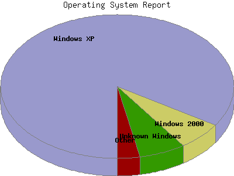

Analog 5.31
Analog 5.31 Report Magic 2.16
Report Magic 2.16The Operating System Report lists the operating system your visitors are running for visitors whose browser types you know. Not all browsers provide this information and not all visitors provide browser information, but what is provided, is summarized here.
This report shows all results. This report is sorted by number of requests for pages.

| Operating System | Number of page requests | Percentage of the requests | |
|---|---|---|---|
| Windows | 3,558 | 75.24% | |
| 1. | Windows XP | 2,960 | 64.27% |
| 2. | Windows 2000 | 292 | 4.89% |
| 3. | Unknown Windows | 186 | 4.90% |
| 4. | Windows NT | 55 | 0.37% |
| 5. | Windows 98 | 53 | 0.57% |
| 6. | Windows 95 | 8 | 0.04% |
| 7. | Windows ME | 4 | 0.20% |
| OS unknown | 3,346 | 18.86% | |
| Unix | 175 | 1.24% | |
| 8. | Linux | 169 | 1.21% |
| 9. | SunOS | 3 | 0.01% |
| 10. | BSD | 3 | 0.01% |
| Macintosh | 136 | 3.67% | |
| Known robots | 61 | 0.99% | |
This report was generated on May 6, 2008 05:30.
Report time frame July 18, 2007 21:56 to May 5, 2008 23:59.
| Web statistics report produced by: | |
| Analog 5.31 | Report Magic 2.16 |